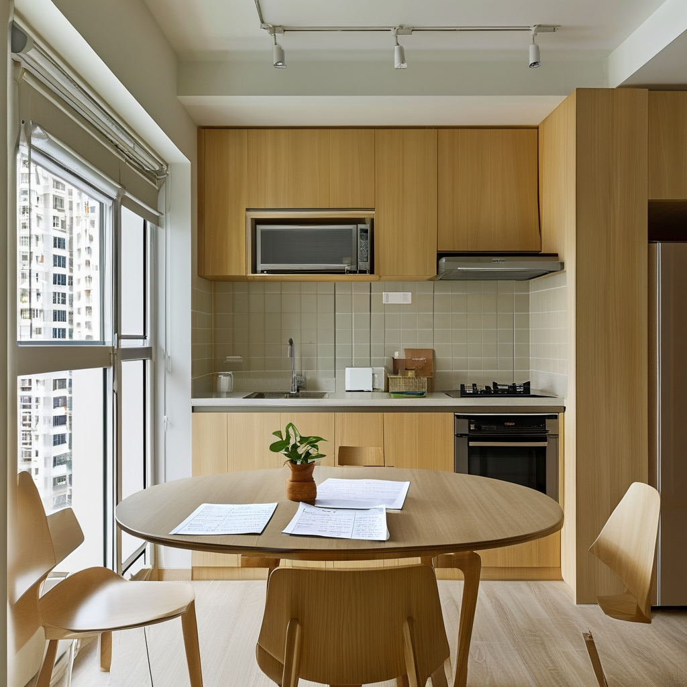
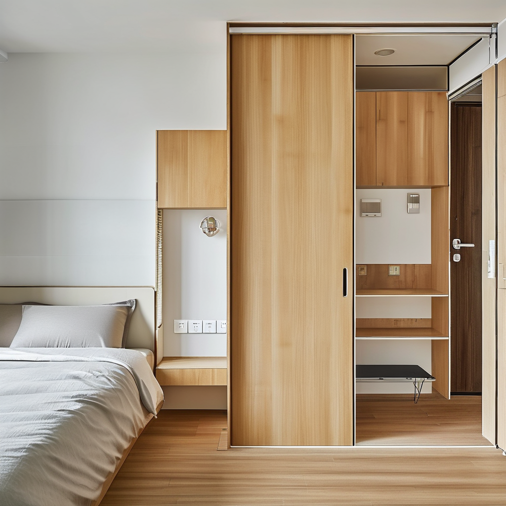
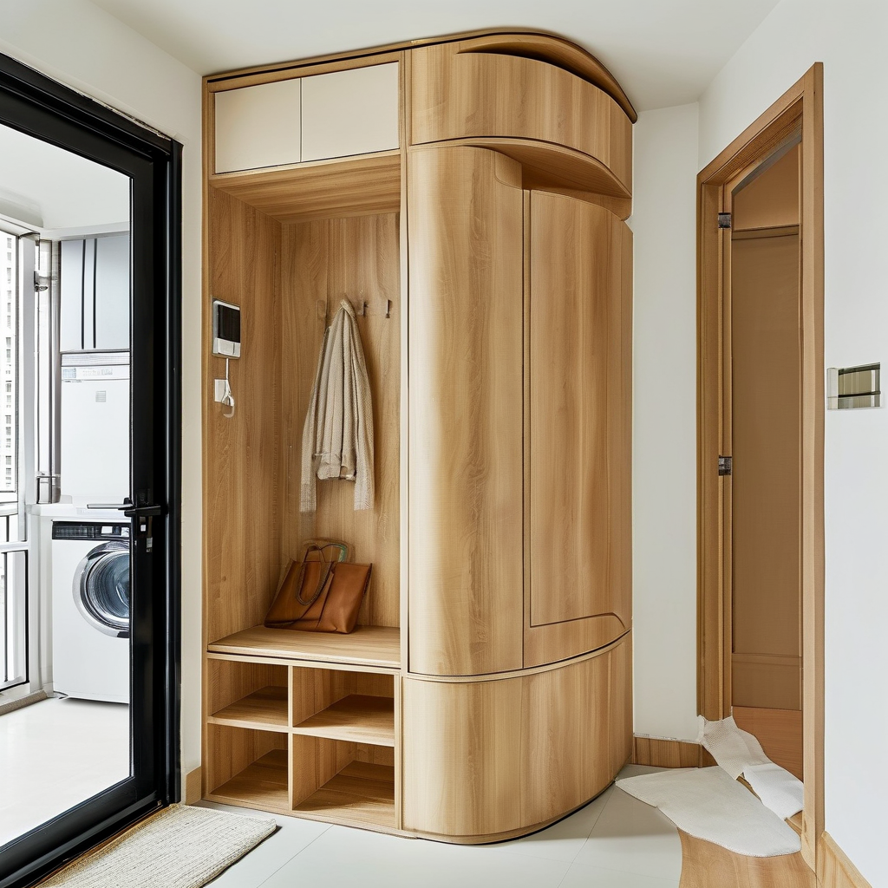
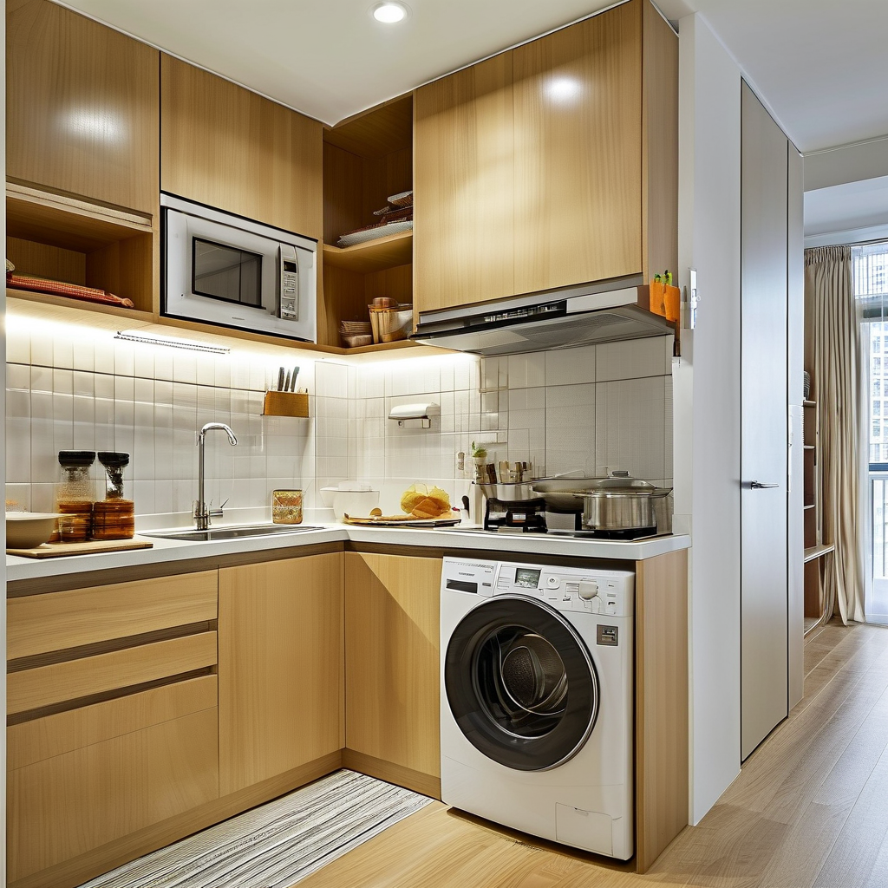
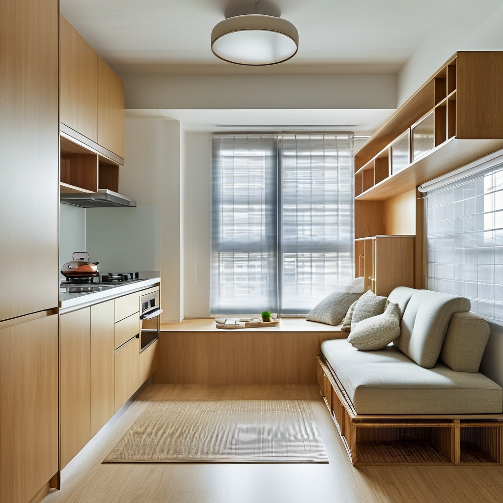

啟德簡約公屋第二期傳提早入伙？住戶拎鎖匙前點樣預留收納位，三個位置唔好亂改｜張丹楓師傅

新聞鈎先講清楚： 有消息指啟德簡約公屋第二期可能較原定時間提早入伙；實際日期、拎鎖匙安排、驗樓方式、可否施工及管理要求，必須以房屋署、房委會或屋邨管理處發出的最新書面通知和現場指示為準。本文是張丹楓師傅的家居規劃分享，不是法律意見。
最近坊間有消息指，啟德簡約公屋第二期可能較原定時間提早入伙。消息未必等於個別住戶的正式安排，大家拎鎖匙日期、驗樓方式、可否施工，以及管理要求，應以官方通知為準。
好多家庭一聽到「可能提早入伙」，第一個反應係即刻買櫃、訂床、搵師傅開工。其實最穩陣的次序係：先確認拎鎖匙安排，再量尺同影相記錄，最後先決定用可拆式、唔破壞原裝設施的收納方案。簡約公屋面積有限，收納唔係鬥做得多，而係預留得啱位、日後唔阻通道。
場景一：收到消息嗰晚——先分清「新聞」同「通知」
阿明一家住得逼，見到手機群組轉發「第二期提早入伙」的消息，已經準備落單買一排頂天櫃。
「師傅，係咪而家訂櫃最快？遲一日都驚趕唔切。」阿明問。
我答佢：「先唔好急住落單。新聞係提醒你準備，唔係你間屋的拎匙通知。先睇清楚通知來源、日期、單位編號同報到安排；冇寫清楚的，就向官方渠道或者屋邨管理處問。」
入伙前可先做一張「物品清單」：大件（床、雪櫃、洗衣機）、每日用品（鞋、口罩、清潔用品）、文件同雜物。每類寫低大約數量，先知道要幾多收納容量。唔好因為一張網上平面圖就買定固定尺寸傢俬，實際門框、掩門、插座位置可能影響擺位。
小貼士：將官方通知截圖或保存好，記低查詢日期與回覆部門；只在家庭內分享必要資料，唔好公開完整地址、單位號碼或個人文件。

場景二：拎鎖匙當日——量尺、影相、畫動線，唔係即刻鑽牆
拎匙入屋，我通常先叫住戶企喺門口，慢慢行一圈。先量「可用位」，再量「理論位」：門打開後剩幾多闊度、櫃門會唔會撞、通道有冇被鞋櫃截斷。
阿明太太指住玄關旁邊：「呢度做一個深櫃應該好用喎？」
「先量三樣嘢：牆到牆闊度、地台到天花高度、門扇開合半徑。」我話，「再記埋踢腳線、消防設備、電掣同網絡位。收納櫃可以淺啲，未必要頂天；最重要係開門後仍然可以順暢出入。」
當日建議帶備捲尺、手機廣角相、紙筆；拍低牆身、地面、窗邊、插座及水位位置。若發現損耗或同通知描述不一致，按官方程序記錄及反映，唔好自行拆、補、鑽。量尺結果最好由兩個人覆核，並預留幾厘米誤差，避免「啱啱好」變成塞唔入。

場景三：門口及走廊——第一個唔好亂改的位置
門口係最容易加櫃、亦最容易出事的位。鞋櫃、掛袋架、傘架一多，通道就會變窄；搬運、清潔或者緊急離開時都唔方便。尤其唔好將固定櫃、層架或雜物伸出公共走廊，亦唔好遮住消防、電箱、通風或門的正常開合範圍。公共地方可唔可以放物品，必須問管理處，唔好自己估。
阿明話：「我做個薄身鞋櫃，鎖喺牆上，應該唔影響啩？」
我即刻提醒：「門口牆身、門框同走廊唔好亂鑽。先用可拆式窄鞋架、門後掛袋，或者把換季鞋放入床底箱。固定安裝之前，睇清楚屋邨要求，唔好為咗多幾對鞋破壞牆面或者阻住逃生動線。」
實用做法係「每日鞋四至六對」留喺近門位，其餘分類放入室內；用有蓋、可疊放的箱，貼上「返工／校服／雨具」標籤。門後掛架要先確認門的承重、閉合同防火要求，唔好用重物壓住門。

場景四：廚房及洗衣位——第二個唔好亂改的位置
廚房收納最忌見到一吋空位就想加層板。水喉、去水、煤氣／電力接駁、抽氣及原有廚櫃，都屬於要小心處理的範圍；未得到明確許可，唔好改喉、移水位、拆櫃、加大型電器或自行接駁電線。呢啲唔只係美觀問題，亦可能影響滲水、負荷、維修責任同鄰居。
「師傅，煮食用品放唔晒，可唔可以將水槽下面拆開再做櫃？」阿明太太問。
我答：「先唔好拆。水槽底下預留畀喉管同維修，改之前要問清楚管理規定。你可以先用可移動抽屜箱、窄身推車、櫃內分隔架，將砧板、鍋具按使用頻率分層；唔好遮住總掣、插座、通風口或者令洗衣機散熱不足。」
入伙前先列出電器尺寸與功率資料，等實際睇過插座、門闊同散熱位先決定。任何需要改電、改水、打牆的工作，應先向相關管理方查詢可否進行，再由合資格人士處理。

場景五：廁所、窗邊及牆身——第三個唔好亂改的位置
廁所同窗邊睇落似有空位，但背後可能有防水層、去水、通風或窗戶安全要求。唔好因為想加鏡櫃、毛巾架、晾衫架，就隨便鑽牆、黏重物、封通風口或改窗。窗台亦唔係自動等於儲物櫃位：重物、尖角及可攀爬物品，對小朋友同長者都有風險。
小琪問：「浴室放清潔用品最方便，牆身加幾個架得唔得？」
我話：「先用免鑽、可移除的輕量收納，但都要按產品承重及牆面狀況；潮濕地方要留通風位，清潔劑要有蓋、放喺小朋友拎唔到的地方。至於要鑽孔、改鏡、裝熱水或抽氣設備，就先問管理處及睇官方要求。」
房內牆身都唔好一見空白就做滿牆櫃。先用床底箱、衣櫃內分格、門後掛袋等「可逆」方案，住一兩個月後觀察真正需要，再考慮合規、可拆的傢俬。窗邊保持開關窗及清潔空間，唔好放阻擋逃生或維修的物件。

收尾：三個位置記口訣——門口唔阻路、廚房唔改喉、廁窗唔鑽牆
如果真係有機會提早入伙，住戶最值錢的準備唔係提早買一堆傢俬，而係帶齊量尺、清單同問題。入屋先確認尺寸及原裝設施，收納先由輕、薄、可拆開始；任何涉及公共地方、牆身、電力、供水、去水、防水、消防或窗戶的改動，都先查官方通知及管理處要求。
我幫住戶睇位，一直用三句口訣：「門口唔阻路、廚房唔改喉、廁窗唔鑽牆。」記住，住得順手比做得花巧更重要；最穩陣的收納，係日後搬走或調整時都可以還原，亦唔影響自己、鄰居同維修人員。
五條 FAQ：簡約公屋入伙及收納
Q1：啟德簡約公屋第二期係咪已經確定提早入伙？
本文只將「有消息指可能提早」作為新聞鈎，唔確認任何實際日期或個別安排。請以房屋署、房委會、屋邨管理處發出的最新書面通知、短訊或正式渠道為準。
Q2：拎鎖匙前可唔可以先訂造全屋傢俬？
唔建議。未實地量度門框、插座、水位、窗邊及通道前，固定傢俬容易尺寸不合或遮擋設施。可先準備尺寸可調、可拆、非固定的收納箱及窄身推車。
Q3：邊三個位置最唔應該亂改？
門口及走廊、廚房及洗衣位、廁所窗邊及牆身，分別涉及通道與消防、水電及維修、防水通風及安全。具體限制仍要看最新屋邨規則。
Q4：免鑽收納係咪一定可以用？
唔係「一定」。要按牆面材質、產品承重、潮濕程度及管理要求判斷；輕物先試，唔好用免鑽膠掛重物、熱源或可能跌落傷人的物件。
Q5：發現單位有損耗或尺寸同資料唔同，應該點做？
先影相、記錄位置及日期，跟拎匙或驗收文件列明的程序向相關部門或屋邨管理處反映。未得到指示前，唔好自行修補、拆卸或改裝。
提示： 圖片為 SiliconFlow AI 生成的場景示意圖，不是任何實際住戶單位或政府官方照片。實際入伙日期、施工限制及屋邨規則，一律以官方最新通知為準。